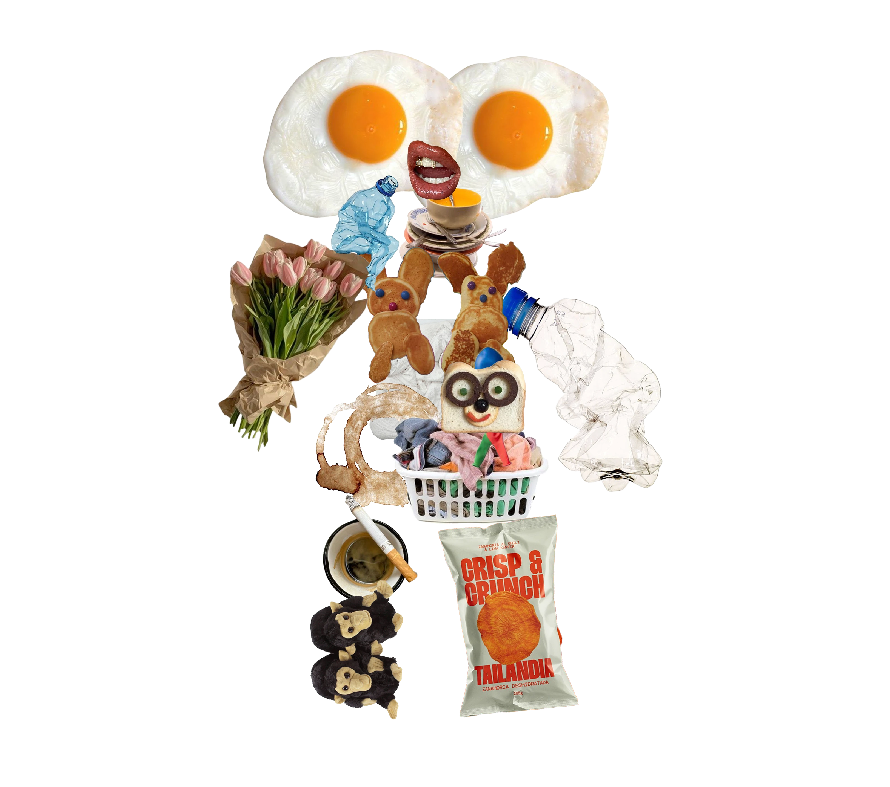

БЛОК 1.
КАК ТЫ СМОТРИШЬ?
1. Когда ты видишь новое пространство, что замечаешь первым?

ДОБРО ПОЖАЛОВАТЬ!
СЕЙЧАС ТЫ ПРОЙДЁШЬ ТЕСТ
«ПРОФИЛЬ ВЗГЛЯДА». ОН
СОСТОИТ ИЗ 4-Х БЛОКОВ.
ПРИЯТНОГО ПРОХОЖДЕНИЯ

СЕЙЧАС ТЫ ПРОЙДЁШЬ ТЕСТ
«ПРОФИЛЬ ВЗГЛЯДА». ОН
СОСТОИТ ИЗ 4-Х БЛОКОВ.
ПРИЯТНОГО ПРОХОЖДЕНИЯ